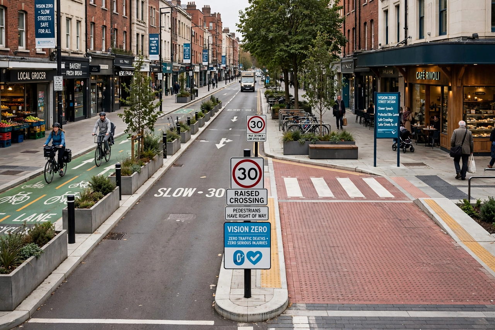

| Vision Zero | |
|---|---|
 A street redesigned according to Vision Zero principles | |
| Origin | Sweden, 1997 |
| Goal | Zero deaths and serious injuries in road traffic |
| Key principle | Responsibility shared between road users and system designers |
Vision Zero is a multi-national road traffic safety project that aims to achieve a highway system with no fatalities or serious injuries involving road traffic. It started in Sweden and was approved by the Swedish parliament in October 1997. A core principle of the vision is that "life and health can never be exchanged for other benefits within society" rather than the more conventional comparison between costs and benefits, where a monetary value is placed on life and health and that value is used to decide how much money to spend on a road network towards the benefit of decreasing risk.
Vision Zero is based on an ethical principle: it can never be ethically acceptable that people are killed or seriously injured when moving within the road transport system. It differs from a traditional approach in that responsibility for safety is shared between the designers of the transport system and its users. System designers are ultimately responsible for the design, operation and use of the road transport system and thereby [responsible] for the level of safety within the entire system. Road users are responsible for following the rules set by the designers. If road users fail to follow these rules, or if injuries occur, designers must take further measures to prevent people from being killed or seriously injured.
The strategy rests on four elements: ethics, responsibility, a philosophy of safety (that the human body can only tolerate a certain amount of kinetic energy before injury becomes fatal), and mechanisms for change. Speed management is central: where cars can collide with pedestrians, speeds should not exceed about 30 km/h; head-on collisions become survivable at speeds up to about 70 km/h with modern cars and good road design.
After its success in Sweden, where road deaths fell markedly over the following decades, Vision Zero was adopted by Norway, the Netherlands in adapted form, and by many cities worldwide including New York City (2014), San Francisco, Boston, London and Toronto. The European Union and the United Nations have endorsed targets consistent with Vision Zero, including halving road deaths by 2030.
Critics argue that Vision Zero can place excessive emphasis on road user behaviour or, conversely, that its goals are unrealistic where traffic volumes and speeds remain high. Some researchers note that progress in many adopting cities has stalled, with pedestrian deaths rising in the United States during the 2010s and 2020s.